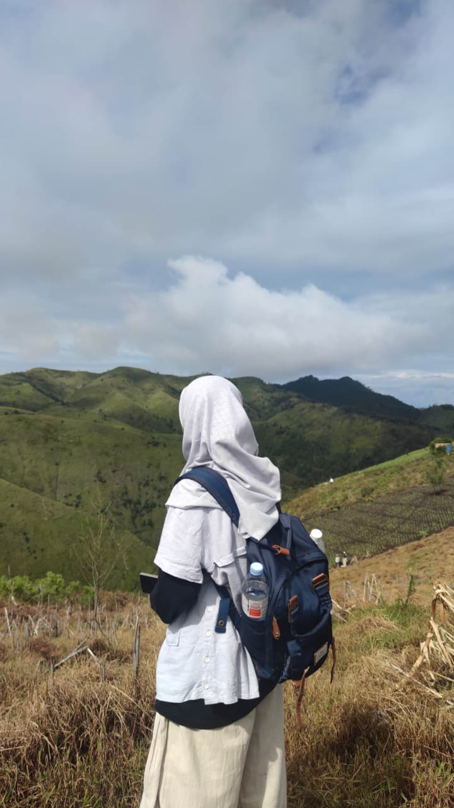
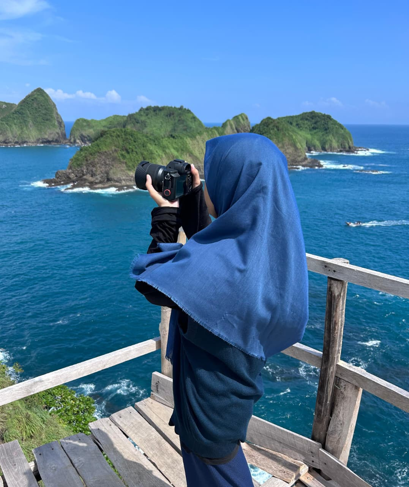
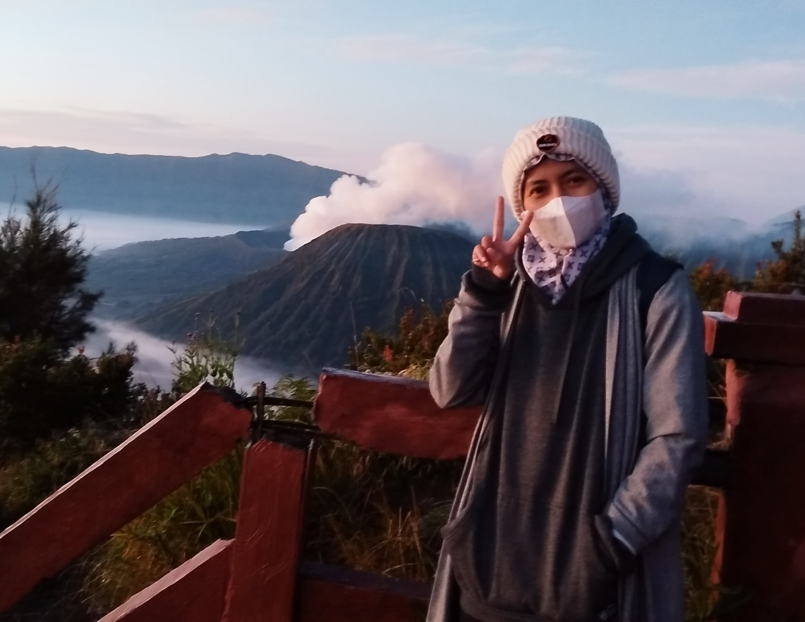
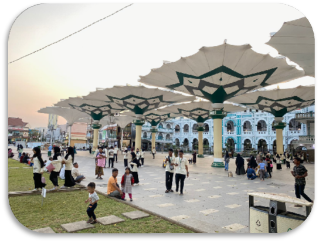
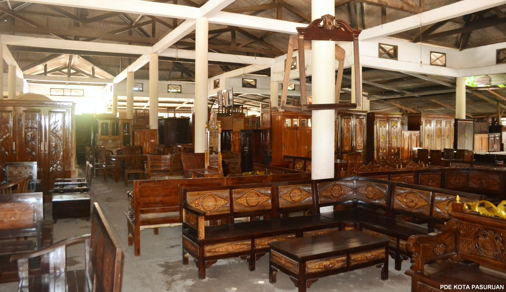
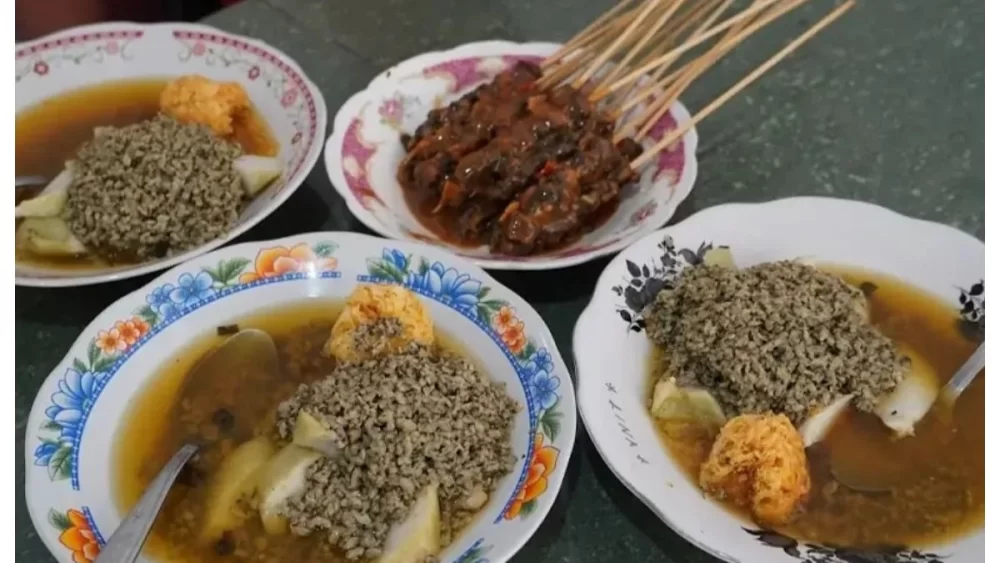
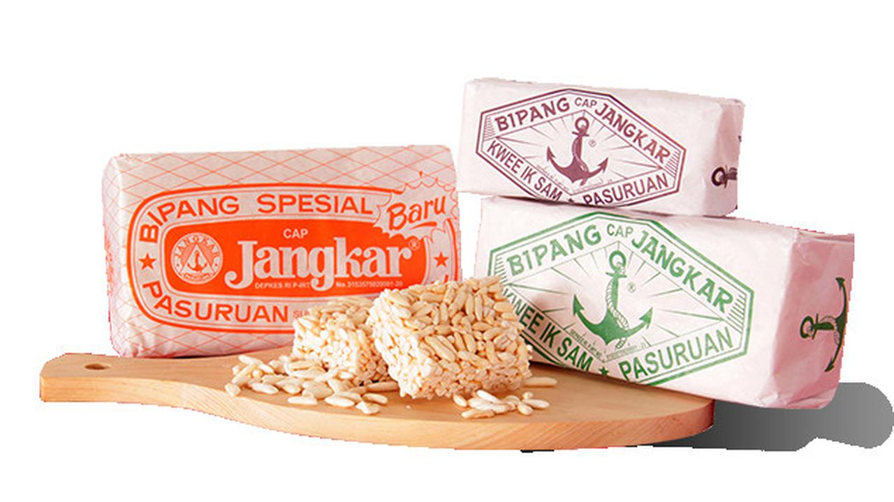
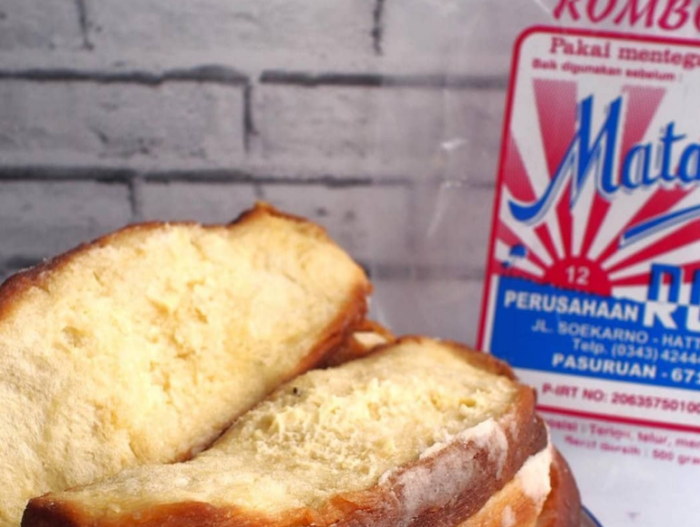
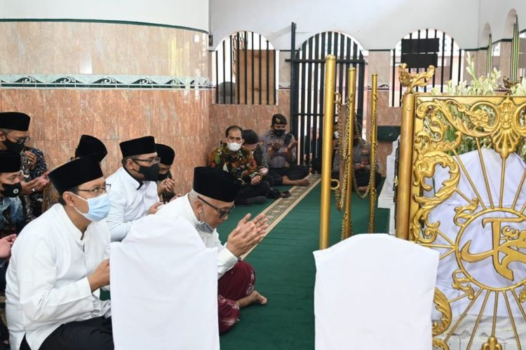

Inti Rakhmawati
PPG Prajabatan 2026
Memuat Portofolio...
MATEMATIKA
Memuat Portofolio...
E Portofolio PPG Prajabatan 2026
NIM: 2504052459
Dari Pembelajaran Menjadi Pendidik: Perjalanan
Menuju Guru Profesional
Perkenalkan, saya Inti Rakhmawati, lahir di Pasuruan pada 1 Januari 1997 dan saat ini berdomisili di Jl. Simpang Bengawan No. 5, Kabupaten Gresik. Saya merupakan seorang pendidik yang memiliki dedikasi tinggi terhadap dunia pendidikan serta berkomitmen untuk memberikan kontribusi positif bagi kemajuan pendidikan di Indonesia.
Inspirasi saya untuk menjadi seorang guru lahir dari pengalaman belajar yang berkesan serta sosok para guru hebat yang saya temui sepanjang perjalanan pendidikan. Kecintaan saya terhadap matematika juga menjadi salah satu alasan utama yang mendorong saya memilih profesi ini. Selain itu, pengalaman bekerja di SD Negeri dan kesempatan berkolaborasi dengan guru-guru inspiratif semakin memperkuat motivasi saya untuk terus berkembang sebagai pendidik yang profesional dan berdampak.
Melalui Program Pendidikan Profesi Guru (PPG), saya bertekad untuk menjadi guru profesional yang tidak hanya kompeten dalam bidang keahlian, tetapi juga mampu menciptakan pembelajaran yang bermakna, inovatif, dan berpusat pada peserta didik. Saya ingin menjadi pendidik yang mampu menuntun peserta didik berkembang sesuai potensi dan karakter yang dimiliki, sekaligus membentuk generasi yang tidak hanya unggul secara akademik, tetapi juga memiliki karakter yang kuat, kreatif, dan siap menghadapi tantangan zaman.
“Seorang guru bukan hanya pengajar, tetapi penuntun yang membantu setiap langkah kecil menuju masa depan yang besar.”

Bukit PremiumHiking adalah hobi yang indah karena mengajarkan kita untuk berhenti sejenak dari hiruk-pikuk kehidupan dan kembali mendengarkan diri sendiri. Di setiap langkah, kita belajar tentang kesabaran, ketekunan, dan arti menikmati proses tanpa terburu-buru. Nafas yang terasa berat justru menjadi pengingat bahwa kita sedang benar-benar hidup.
Di tengah alam yang sunyi dan sederhana, kita menemukan ketenangan yang tidak bisa didapatkan di tempat lain. Hiking bukan hanya tentang mencapai puncak, tetapi tentang perjalanan itu sendiri tentang bagaimana kita belajar bersyukur, menghargai setiap langkah, dan pulang dengan hati yang lebih tenang.

PhotographyMenangkap momen-momen bermakna dan mengabadikan peristiwa berharga di sekitar saya lewat lensa kamera.

TravelingBepergian ke tempat baru, mempelajari budaya lokal, selalu dapat memperluas wawasan dan pengalaman hidup saya.
Saya memilih menjadi guru karena menyadari bahwa pendidikan memiliki peran besar dalam membentuk masa depan seseorang. Keinginan ini tumbuh dari pengalaman belajar yang saya jalani serta semakin kuat saat menjadi tutor di Rumah Belajar. Dari sana, saya merasakan bahwa berbagi ilmu dan membantu orang lain memahami sesuatu memberikan kepuasan tersendiri.
Pengalaman mengajar di SD Negeri semakin mempertegas pilihan saya untuk menjadi pendidik. Saya memahami bahwa setiap peserta didik memiliki potensi yang berbeda dan membutuhkan bimbingan yang tepat. Oleh karena itu, saya ingin menjadi guru profesional yang tidak hanya mengajar, tetapi juga membimbing dan menginspirasi, serta menciptakan pembelajaran yang bermakna bagi peserta didik.
Informasi kampus tempat saya menempuh pendidikan PPG Prajabatan.
UNIVERSITAS MUHAMMADIYAH GRESIK
Jl. Sumatera No.101, Gn. Malang, Randuagung, Kec. Kebomas, Kabupaten Gresik, Jawa Timur 61121

Payung Madinah PasuruanPayung Madinah Pasuruan merupakan objek wisata religi ikonik yang terletak di kawasan Alun-Alun Kota Pasuruan, tepat di depan Masjid Agung Al-Anwar.
Kehadiran payung-payung raksasa hidrolik ini membuat Kota Pasuruan kerap dijuluki sebagai "Madinah Van Java". Payung-payung ini dapat dibuka dan ditutup secara otomatis, menambah keindahan dan daya tarik bagi wisatawan yang berkunjung.

Pasar MeubelPasar Meubel Pasuruan adalah pusat perdagangan furnitur dan mebel yang terkenal di Jawa Timur. Pasar ini menyediakan berbagai jenis furnitur berkualitas dengan harga terjangkau.
Sebagai salah satu ikon ekonomi Kota Pasuruan, Pasar Meubel menjadi tujuan utama bagi masyarakat yang mencari kebutuhan perabotan rumah tangga serta menjadi sumber penghidupan bagi banyak pengrajin lokal.

Kuliner KhasKuliner khas Pasuruan menawarkan perpaduan cita rasa gurih, manis, dan pedas autentik Jawa Timur yang sangat memanjakan lidah. Destinasi kuliner di wilayah ini sangat beragam, mulai dari makanan berat legendaris yang kaya rempah seperti Nasi Punel dan Rawon Sakinah, hidangan laut unik seperti Kupang Kraton, hingga jajanan manis tradisional berupa Bipang Jangkar.

Bipang Jangkar

Roti Matahari

Makam KH.Abdul HamidPasuruan memiliki banyak situs wisata religi yang menarik dikunjungi, termasuk makam-makam keramat dan masjid bersejarah yang menjadi tempat ziarah.
Wisata religi di Pasuruan tidak hanya menjadi tujuan spiritual, tetapi juga sebagai sarana memperdalam pemahaman tentang sejarah dan budaya Islam di kawasan ini.
Kumpulan karya dan produk pembelajaran yang dikembangkan selama PPG
Dokumen perencanaan pembelajaran mendalam mencakup proyeksi ortogonal dengan model PJBL.
Pengembangan media berbasis game digital untuk meningkatkan motivasi belajar peserta didik.
Kumpulan artefak hasil pekerjaan peserta didik yang menunjukkan capaian kompetensi pembelajaran.
Lembar refleksi dan penilaian kinerja dari Guru Pamong serta DPL selama praktik lapangan.
Rekaman proses pembelajaran di kelas sebagai bagian dari dokumentasi praktik mengajar.
Dokumen dan lampiran pendukung yang relevan dengan portofolio PPG ini
Analisis reflektif terhadap perjalanan pembelajaran dan pengembangan profesionalisme
Saya terbuka untuk kolaborasi dan diskusi seputar pendidikan!